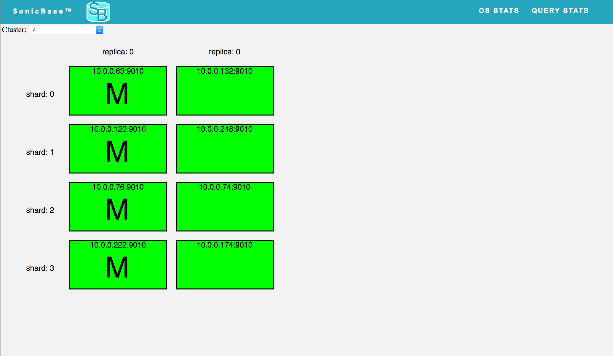

SonicBase. In-memory embedded or distributed streaming sql database
Monitoring Health
The health page shows the general health of the cluster. Each box on the page represents a server in the cluster. A green box means the server is healthy. A red box means the server is down. The master replica is marked with an "M". Each shard has a master. The master of shard zero is the main cluster master. Each box is also marked with the host and port of the server.